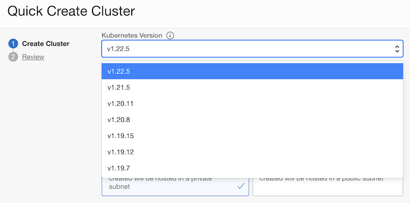

Support for Kubernetes version 1.22.5
OKE에서 쿠버네티스 지원 버전이 업데이트 되었습니다. 이제 1.22.5을 새롭게 지원합니다. 기존에 지원하던 1.21.5, 1.20.11은 계속 지원합니다.
업데이트 사항
1.22.x 지원으로 인해 1.19.15 버전은 2022년 4월 22일 까지 지원합니다.
- 지원이 종료하게 되면, 1.19.x버전으로 신규 클러스터 생성이 불가합니다.
- 지원이 종료하게 되면, 기존 클러스터에 1.19.x버전으로 새 Node Pool 추가가 불가합니다.
- 아래 그림은 현재 3월 22일 기준이며 1.22.5 출시로 인한 2022년 4월 22일 이후 변경이 발생하며, 지원 버전은 아래를 확인하세요.

업그레이드 가이드에 따라 종료일 이전에 업그레이드를 권고하고 있습니다.
- Upgrading the Kubernetes Version on Control Plane Nodes in a Cluster
- Upgrading the Kubernetes Version on Worker Nodes in a Cluster
- 1.7 Kubernetes 지원 버전 및 업그레이드
이 글은 개인으로서, 개인의 시간을 할애하여 작성된 글입니다. 글의 내용에 오류가 있을 수 있으며, 글 속의 의견은 개인적인 의견입니다.